직렬 갭과 특성요소
속류를 차단할 수 있는 교류 최고전압이다.
피뢰기 방전 중 피뢰기 단자에 남게 되는 충격전압이다.
| 점수 | 세부기준 |
|---|---|
| 3~0점 | (1), (2), (3)번 중 한 문항이 맞을 때마다 1점씩 획득 |
[조건]
작업면 요구 조도 500[lx], 천장 반사율 50[%], 벽면 반사율 50[%], 바닥 반사율 10[%]이고, 보수율 0.7, T5 22[W] 1등의 광속은 2500[lm]으로 본다.
[조명률 기준표]
| 천장 | 70[%] | 50[%] | 30[%] |
|---|---|---|---|
| 반사율 | |||
| 벽 | 70 50 30 20 | 70 50 30 20 | 70 50 30 20 |
| 바닥 | 10 | 10 | 10 |
| 실지수 | 조명률 [%] | 조명률 [%] | 조명률 [%] |
| 1.5 | 64 55 49 43 | 58 51 45 41 | 52 46 42 38 |
| 2.0 | 69 61 55 50 | 62 56 51 47 | 57 52 48 44 |
| 2.5 | 72 66 60 55 | 65 60 56 52 | 60 55 52 48 |
| 3.0 | 74 69 64 59 | 68 63 59 55 | 62 58 55 52 |
| 4.0 | 77 73 69 65 | 71 67 64 61 | 65 62 59 56 |
| 5.0 | 79 75 72 69 | 73 70 67 64 | 67 64 62 60 |
해설) 복합 계산형 / 난이도 중
\[ H = 3 - 0.8 = 2.2 \]
\[ RI = \frac{12 \times 18}{2.2 \times (12 + 18)} = 3.27 \]
정답 3.0
63 [%]
설치 등기구의 최소수량 산정
\[ N = \frac{500 \times 12 \times 18}{(2500 \times 2) \times 0.63 \times 0.7} = 48.98 \]
정답 49[조]
\[ W = (22 \times 2) \times 49 \times 10 \times 30 \times 10^{-3} = 646.8 \text{ [kWh]} \]
정답 646.8 [kWh]
부분점수
| 점수 | 세부기준 |
|---|---|
| 8~0점 | (1), (2), (3), (4)번 중 한 문항이 맞을 때마다 2점씩 획득 |
해설
실지수 분류 기호표
| 범위 | 4.5 이상 | 4.5~3.5 | 3.5~2.75 | 2.75~2.25 | 2.25~1.75 |
|---|---|---|---|---|---|
| 실지수 | 5.0 | 4.0 | 3.0 | 2.5 | 2.0 |
| 기호 | A | B | C | D | E |
| 범위 | 1.75~1.38 | 1.38~1.12 | 1.12~0.9 | 0.9~0.7 | 0.7 이하 |
| 실지수 | 1.5 | 1.25 | 1.0 | 0.8 | 0.6 |
| 기호 | F | G | H | I | J |
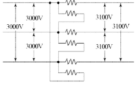
해설) 복합 계산형 / 난이도 중
\[ V_e = \frac{3,000}{2} + \sqrt{\frac{3,100^2}{3} - \frac{3,000^2}{12}} = 66.31 [V] \]
정답 변압기 1차 전압: 3,000 [V], 변압기 2차 전압: 66.31 [V]
\[ 자기 용량 = \frac{3 \times 66.31}{\sqrt{3} \times 3,100} \times 200 = 7.41 [kVA] \]
정답 7.41 [kVA]
부분점수
| 점수 | 세부기준 |
|---|---|
| 5점 | (1), (2)번이 모두 맞은 경우 5점 획득 |
| 3점 | (1)번만 맞은 경우 3점 획득 |
| 2점 | (2)번만 맞은 경우 2점 획득 |
해설
[변압장 Δ(델타)결선]
3대의 단권변압기를 이용하여 고·저압의 공통된 부분을 3각형이 되도록 결선한 것으로 공식은 다음과 같다.
\[ V_e = \frac{V_1}{2} + \sqrt{\frac{V_1^2}{3} - \frac{V_1^2}{12}} [V] \]
\[ 자기 용량 = \frac{3V_1I_2}{\sqrt{3}V_2} = \sqrt{3}\left(\frac{V_1}{2V_2}\right)\sqrt{1+\frac{1}{4}\left(\frac{V_1}{V_2}\right)^2} [VA] \]
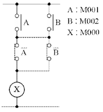
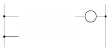
| 차례 | 명령 | 번지 |
|---|---|---|
| 0 | LOAD | M001 |
| 1 | ① | M002 |
| 2 | ② | ③ |
| 3 | ④ | ⑤ |
| 4 | ⑥ | - |
| 5 | OUT | M000 |
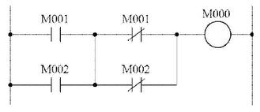
| 차례 | 명령 | 번지 |
|---|---|---|
| 0 | LOAD | M001 |
| 1 | ① OR | M002 |
| 2 | ② LOAD NOT | ③ M001 |
| 3 | ④ OR NOT | ⑤ M002 |
| 4 | ⑥ AND LOAD | - |
| 5 | OUT | M000 |
부분점수
| 점수 | 세부기준 |
|---|---|
| 4점 | (1), (2)번이 모두 맞은 경우 4점 획득 |
| 2점 | (1)번이 맞은 경우 2점 획득 |
| 2점 | (2)번은 소문항 6개가 모두 맞으면 2점, 3개 이상 맞으면 1점 획득 |
해설) 단순 계산형 / 난이도 中
정답[계산과정] \[ |I_N| = |110 + 86(1\angle -120^\circ) + 95(1\angle -240^\circ)| \] \[ = |110 + 86(-\frac{1}{2} - j\frac{\sqrt{3}}{2}) + 95(-\frac{1}{2} + j\frac{\sqrt{3}}{2})| \] \[ = |110 - 43 - j74.48 - 47.5 + j82.27| = |19.5 + j7.79| \] \[ = \sqrt{19.5^2 + 7.79^2} \approx 21 [A] \]
정답 21 [A]
부분점수
| 점수 | 세부기준 |
|---|---|
| 5점 | 계산과정과 정답이 모두 맞은 경우 5점 획득 |
| 0점 | 계산과정이나 정답에 오류가 있는 경우 0점 |
[조건]
\[ I = \frac{100 \times 77 + 60 \times 55}{110} = 100 \text{ [A]} \]
\[ C = \frac{1}{0.8} \times 1.2 \times 100 = 150 \text{ [Ah]} \]
정답 150 [Ah]
| 점수 | 세부기준 |
|---|---|
| 5점 | 계산과정과 정답에 오류가 없는 경우 5점 획득 |
| 0점 | 계산과정이나 정답에 오류가 있는 경우 0점 |
\[ C = \frac{1}{L} KI \text{ [Ah]} \]
해설) 서술 암기형 / 난이도 中
① 감전 방지, ② 기기의 손상 방지, ③ 보호 계전기의 확실한 동작
① 일반기기 및 제어반 외함 접지 ② 피뢰기 접지 ③ 피뢰침 접지 ④ 옥외 철구 및 경계책 접지
| 점수 | 세부기준 |
|---|---|
| 5점 | (1), (2)번이 모두 맞은 경우 5점 획득 |
| 4점 | 소문항 7개 중 5~6개가 정답일 경우 4점 획득 |
| 3점 | 소문항 7개 중 3~4개가 정답일 경우 4점 획득 |
| 2점 | 소문항 7개 중 1~2개가 정답일 경우 4점 획득 |
접지의 목적과 접지해야 하는 위치를 물어보는 문제로 단답 암기형 유형이다. 접지공사는 인체와 전기설비의 보호를 위해서 가장 기본적이며 중요한 역할을 하는 공사로 자주 출제된다.
① 감전 방지: 기기의 절연 열화나 손상 등으로 누전이 발생하면 전류가 접지선으로 흘러 기기의 대지전위 상승이 억제되고 인체의 감전 위험이 줄어든다.
② 기기의 손상 방지: 뇌전류 또는 고저압 혼촉 등에 의해 침투하는 고전압을 접지선을 통해 대지로 흘려보내 기기의 손상을 방지한다.
③ 보호계전기의 확실한 동작 확보: 접지를 하면 기준 전위(0[V])가 확실하게 되므로 계전기의 동작의 안정성을 확보할 수 있다. 지락사고 시 일정 크기 이상의 지락전류가 흐르기 때문에 지락계전기 등의 동작을 확실하게 할 수 있다.
① 발생현상:
② 방지대책:
변압기의 외부의 온도와 내부에서 발생하는 열에 의해 변압기 내부의 절연유의 부피가 수축하거나 팽창하게 된다. 이러한 현상으로 변압기 외부의 공기가 변압기 내부로 출입하게 되는 것을 변압기의 호흡작용이라고 한다.
① 발생현상: 변압기 내부에 수분 및 불순물이 혼입되어 절연유의 절연내력을 저하시키고 침전물을 발생시킨다.
② 방지대책: 변압기에 흡습 호흡기를 설치한다.
부분점수
| 점수 | 세부기준 |
|---|---|
| 5점 | (1), (2)번이 모두 맞은 경우 5점 획득 |
| 3점 | (1)번만 맞은 경우 3점 획득 |
| 2점 | (2)번만 맞은 경우 2점 획득, 소문항 1개당 1점씩 부분점수 획득 |
해설) 서술 암기형 / 난이도 중
부분점수
| 점수 | 세부기준 |
|---|---|
| 7~0점 | 소문항 7 중 1문항을 맞힐 때마다 1점씩 획득 |
해설
단권 변압기
[배점: 5점]
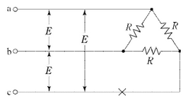
[유도과정]
정답단상인 경우의 부하 R_L은 다음과 같다.
\[ R_L = \frac{R \times 2R}{R + 2R} = \frac{2}{3}R \]
X점이 단선되었을 경우 단상의 소비전력 P_1은 다음과 같다.
\[ P_1 = \frac{E^2}{R_L} = \frac{E^2}{\frac{2}{3}R} = \frac{3}{2}\frac{E^2}{R} \]
단선 전 3상의 소비전력 P_3 = 3이다.
\[ 소비전력비 = \frac{P_1}{P_3} = \frac{\frac{3}{2}\frac{E^2}{R}}{3\frac{E^2}{R}} = \frac{1}{2} \implies P_1 = \frac{1}{2}P_3 \]
| 점수 | 세부기준 |
|---|---|
| 5점 | 유도과정과 정답이 모두 맞은 경우 5점 획득 |
| 0점 | 유도과정이나 정답에 오류가 있는 경우 0점 |
X점이 단선되면 단상부하가 된다고 생각하고 계산하면 된다.
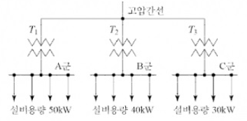
[조건]
| 구분 | 계산과정 | 답 |
|---|---|---|
| A군 | ||
| B군 | ||
| C군 |
| 구분 | 계산 과정 | 답 |
|---|---|---|
| A군 | ||
| B군 | ||
| C군 |
해설) 복합 계산형 / 난이도 중
정답| 구분 | 계산과정 | 답 |
|---|---|---|
| A군 | \[ \frac{50 \times 0.5}{1.2} = 20.83 \] | 20.83 [kW] |
| B군 | \[ \frac{40 \times 0.5}{1.1} = 18.18 \] | 18.18 [kW] |
| C군 | \[ \frac{30 \times 0.5}{1.2} = 12.5 \] | 12.5 [kW] |
\[ 최대부하 = \frac{20.83 + 18.18 + 12.5}{1.3} = 39.62 [kW] \]
정답 39.62 [kW]
| 구분 | 계산과정 | 답 |
|---|---|---|
| A군 | \[ 20.83 \times 0.6 = 12.5 \] | 12.5 [kW] |
| B군 | \[ 18.18 \times 0.5 = 9.09 \] | 9.09 [kW] |
| C군 | \[ 12.5 \times 0.4 = 5 \] | 5 [kW] |
\[ 부하율 = \frac{12.5 + 9.09 + 5}{39.62} \times 100 = 67.11 [%] \]
정답 67.11 [%]
부분점수
| 점수 | 세부기준 |
|---|---|
| 8~0점 | (1), (2), (3), (4)번 중 한 문항이 맞을 때마다 2점씩 획득 |
해설
합성 최대 수요 전력 = 수용설비 각각의 최대 수용전력의 합 = 설비 용량 × 수용률 / 부등률
start1을 누르면 전동기는
정회전하며, start2를 누르면 역회전한다.) [배점: 6점]
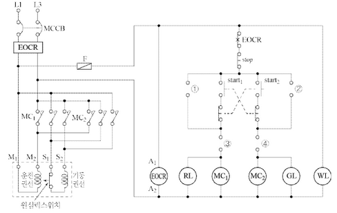
①~④ 부분의 미완성 회로를 위의 도면에 직접 완성하시오. (단, 접점기호와 명칭도 기입해야 한다.)
콘덴서 기동형 단상 유도전동기의 기동원리를 작성하시오. 정답
WL, GL, RL은 무엇을 표시하는 표시등인지 각각 쓰시오. 정답 ① WL: ② GL: ③ RL:
(해설) 도면완성+서술 암기형 / 난이도 中
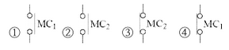
주권선(운전권선) 전류와 보조권선(기동권선) 전류의 위상차에 의한 회전자계에 의해 기동하는 단상 유도전동기이다.
부분점수
| 점수 | 세부기준 |
|---|---|
| 6~0점 | (1), (2), (3)번 중 한 문항이 맞을 때마다 2점씩 획득 |
해설
콘덴서 전동기
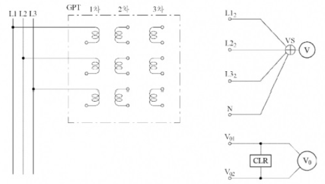
GPT를 활용하여 주회로의 전압 등을 나타내는 회로를 구성하려고 할 때 활용 목적에 알맞도록 미완성 부분을 위의 도면에 직접 그리시오. (단, 접지개소를 정확하게 표기해야 한다.)
GPT의 사용용도를 간단히 작성하시오.
① 1차 전압:
② 2차 전압:
③ 3차 전압:
해설: 서술 암기형 + 단답 암기형 / 난이도 上
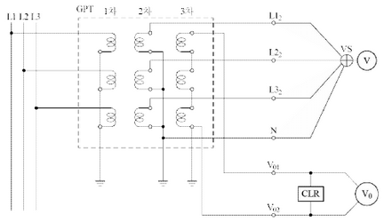
정답 비접지 선로의 접지 전압을 검출한다.
\[ ① 1차 전압: \frac{22,900}{\sqrt{3}} [V] \]
\[ ② 2차 전압: \frac{110}{\sqrt{3}} [V] \]
\[ ③ 3차 전압: \frac{190}{3} [V] \]
정답 지락된 상의 램프는 소등되고, 지락되지 않은 다른 두 상의 램프는 더욱 밝아진다.
부분점수
| 점수 | 세부기준 |
|---|---|
| 6점 | (1), (2), (3), (4)번이 모두 맞은 경우 6점 획득 |
| 2점 | (1)번만 맞은 경우 2점 획득 |
| 2점 | (2), (4)번이 맞은 경우 각각 1점씩 획득 |
| 2점 | (3)번만 맞은 경우 2점 획득 |
[조건]
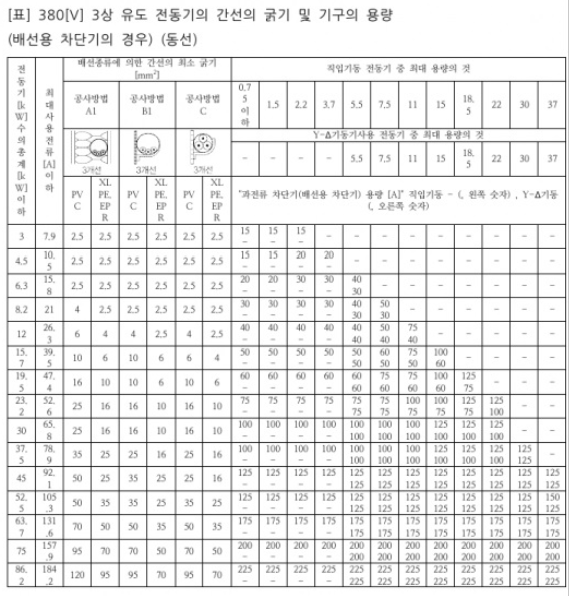
[비고]
\[ 전동기수의 총계 = 0.75 + 1.5 + 3.7 + 3.7 + 7.5 = 17.15 [kW] \]
표에서 19.5 [kW] 칸에서 전선 10 [mm²]를 선정한다.
정답 10 [mm²]
\[ 사용전류의 총계 = 2.53 + 4.16 + 9.22 + 9.22 + 17.69 = 42.82 [A] \]
표에서 최대사용전류 47.4 [A] 칸과 기동기 사용 7.5 [kW] 칸에서 과전류차단기 60 [A]를 선정한다.
정답 60 [A]
| 점수 | 세부기준 |
|---|---|
| 4점 | (1), (2)번이 모두 맞은 경우 4점 획득 |
| 2점 | (1), (2)번 중 하나만 맞은 경우 2점 획득 |
복잡한 문제처럼 보이지만 전동기 수와 사용전류의 합계를 구한 후 표에서 해당 수치에 맞는 조건을 선정하면 쉽게 풀 수 있다.
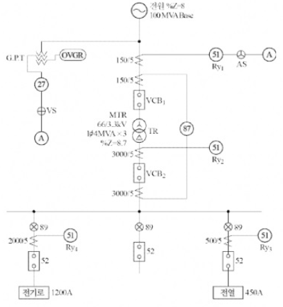
| 기기 | 명칭 | 용도 |
|---|---|---|
| 27 | ||
| 87 |
[조건]
R{y1}, R{y2}의 탭 설정값은 부하전류 160[%]에서 설정한다.
R*{y3}의 탭 설정값은 부하전류 150[%]에서 설정한다.
R*{y4}는 부하가 변동부하이므로, 탭 설정값은 부하전류 200[%]에서 설정한다.
과전류 계전기의 전류 탭은 2[A], 3[A], 4[A], 5[A], 6[A], 7[A], 8[A]이다.
| 계전기 | 계산과정 | 설정값 |
|---|---|---|
| \[ R\_{y1} \] | ||
| \[ R\_{y2} \] | ||
| \[ R\_{y3} \] | ||
| \[ R\_{y4} \] |
| 차단기의 정격표준용량[MVA] | |||
|---|---|---|---|
| 1,000 | 1,500 | 2,500 | 3,500 |
| 기기 | 명칭 | 용도 |
|---|---|---|
| 27 | 부족 전압 계전기 | 상시전원 정전 시 또는 부족전압 시 동작하여 경보를 발하거나 차단기를 동작 |
| 87 | 비율 차동 계전기 | 발전기나 변압기의 내부 고장에 대한 보호용으로 사용 |
| 계전기 | 계산과정 | 계산식 | 설정값 |
|---|---|---|---|
| Ry₁ | I | \(\frac{4 \times 10^6 \times 3}{\sqrt{3} \times 66 \times 10^3} \times \frac{5}{150} \times 1.6 = 5.6\) | 6 [A] |
| Ry₂ | I | \(\frac{4 \times 10^6 \times 3}{\sqrt{3} \times 3.3 \times 10^3} \times \frac{5}{3,000} \times 1.6 = 5.6\) | 6 [A] |
| Ry₃ | I | \(450 \times \frac{5}{500} \times 1.5 = 6.75\) | 7 [A] |
| Ry₄ | I | \(1,200 \times \frac{5}{2,000} \times 2 = 6\) | 6 [A] |
72.5 [kV]
\[ 계산과정: P_s = \frac{100}{8} \times 100 = 1,250 [MVA] \]
정답: 1,500 [MVA] 선정
(부분점수)
| 점수 | 세부기준 |
|---|---|
| 9점 | (1), (2), (3), (4)번이 모두 맞은 경우 9점 획득 |
| 1점 | (3)번만 맞은 경우 1점 획득 |
| 2점 | (4)번만 맞은 경우 2점 획득 |
| 6점 | (1), (2)번은 1문항이 맞을 때마다 3점씩 획득. 단, 오기입 1개당 1점씩 감점 |
(기준충격 절연강도)
| 차단기의 정격전압 [kV] | 사용회로의 공칭 전압 [kV] | BIL [kV] |
|---|---|---|
| 0.6 | 0.1, 0.2, 0.4 | 45 |
| 3.6 | 3.3 | 60 |
| 7.2 | 6.6 | 150 |
| 24.0 | 22.0 | 350 |
| 72.5 | 66.0 | 750 |
(차단기 용량)
① 단락 용량은 %임피던스에 의하여 산출하며, %임피던스는 \[\%Z = \frac{P_Z}{10 V^2}\] 이기 때문에 \[ P_s = \frac{100}{ \%Z_n} P_n \] 으로 구한다.
② 차단기의 차단용량은 계통의 단락용량보다는 커야 하므로, 차단기의 정격용량 표에서 1,500[MVA]를 선정한다.
해설) 단순 계산형 / 난이도 下
정답[계산과정] \[ t = \frac{250 \times 10,000 \times 0.344}{860 \times 500 \times \frac{1}{2}} = 4 \text{ [h]} \]
정답 4[h]
부분점수
| 점수 | 세부기준 |
|---|---|
| 5점 | 계산과정과 정답에 오류가 없는 경우 5점 획득 |
| 0점 | 계산과정이나 정답에 오류가 있는 경우 0점 |
해설
다음과 같은 발전기의 용량 구하는 식을 활용하여 운전시간을 구할 수 있다.
\[ P = \frac{BH\eta}{860t} \text{ [kW]} \]
B: 연료[kg], H: 발열량[kcal/kg], η: 효율, t: 시간
해설) 단순 계산형 / 난이도 중
정답[계산과정] \[ P = \left[ \left( \frac{V_s}{5.5} \right)^2 - 0.6 \right] \times 100 = \left[ \left( \frac{345}{5.5} \right)^2 - 0.6 \right] \times 200 \times 100 = 381,471.07 \text{ [kW]} \]
정답 381,471.07 [kW]
부분점수
| 점수 | 세부기준 |
|---|---|
| 5점 | 계산과정이나 정답에 오류가 없는 경우 5점 획득 |
| 0점 | 계산과정이나 정답에 오류가 있는 경우 0점 |
해설
Still의 식(경제적인 송전전압)
다음 Still의 식을 응용하여 송전전력을 계산한다.
\[ V_s = 5.5 \sqrt{0.6l + \frac{P}{100}} \text{ [kV]} \]
\[ l: 송전 거리 [km], P: 송전전력 [kW] \]
| 점수 | 세부기준 |
|---|---|
| 5~0점 | 소문항 1개가 정답일 때마다 1점씩 획득 |
감리원이 시운전을 완료한 후 성과품을 공사업자로부터 제출받아 검토한 후 발주자에게 인계하여야 할 사항